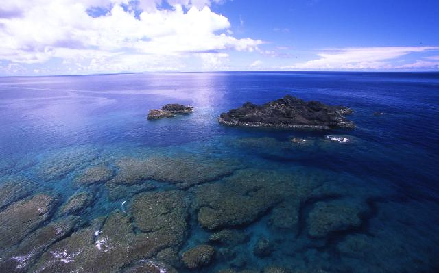

沖永良部島（おきのえらぶじま、おきえらぶじま）は奄美群島の南西部に位置する島、鹿児島県大島郡に属し、九州本島から南へ536km、沖縄本島から北へ約60km、北緯27度東経128度付近に位置します。
気候は温暖な亜熱帯性気候で年間平均気温は22℃であり、奄美群島の中では冬の気温が比較的温暖で沖縄本島とほぼ同じである。年間降水量は約2000mmと本土と比べると多めだが、これは梅雨と台風の影響が大きいためであり実際には晴天の日が多く、南西諸島の中では降水量が少なく過ごしやすい島です。
